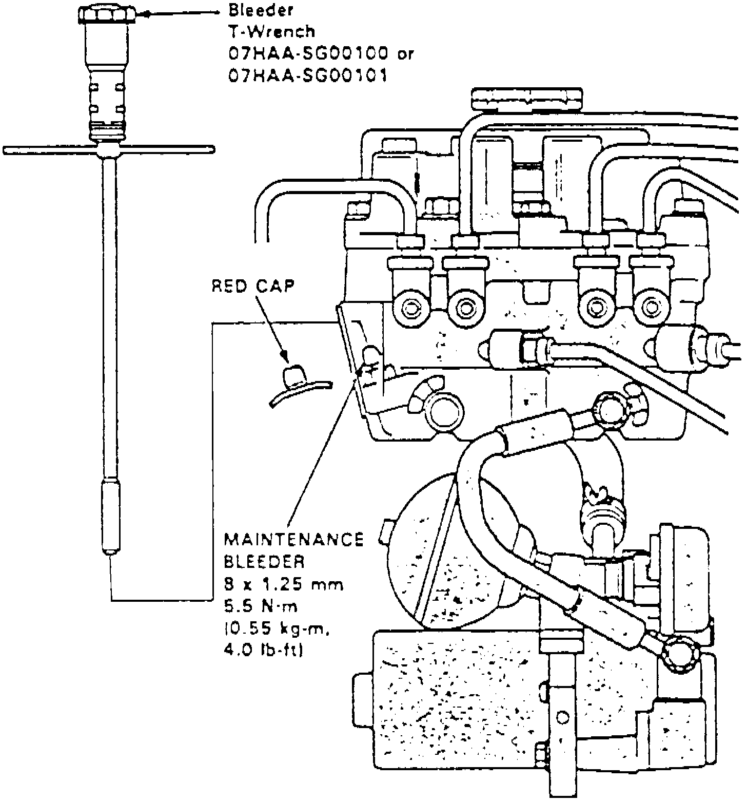
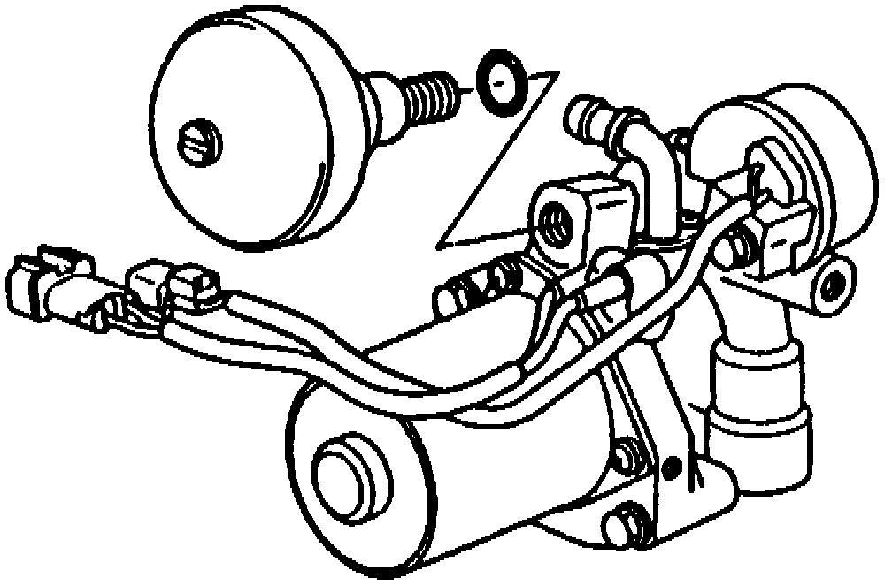
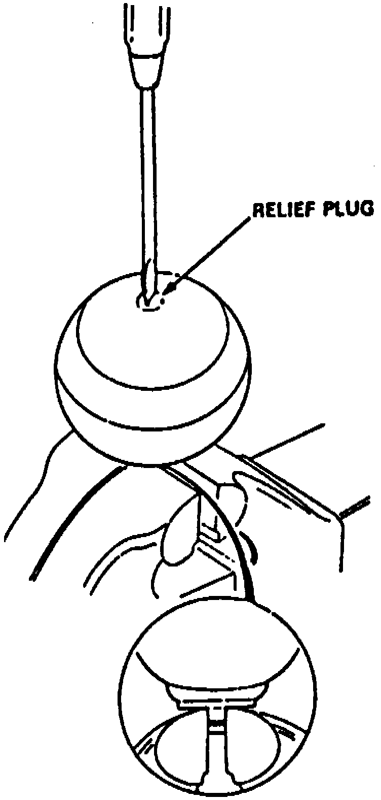

Accumulator Pressure Switch
Fig. 94 System Air Bleed:

Fig. 98 Accumulator/Pressure Switch Removal:

Fig. 99 Accumulator Disposal:

1. Drain high pressure brake fluid from power unit, Fig. 94, then remove three flange bolts and separate accumulator from accumulator bracket. Replace switch, Fig. 98.
2. Accumulator contains high pressure nitrogen gas. Do not puncture, expose to flame or attempt to disassemble accumulator. Carelessness may cause unit to explode, causing personal injury.
3. Place accumulator in suitable vise, Fig. 99, ensuring relief plug points straight up. Slowly turn plug 3 1/2 times, then wait three minutes for pressure to escape.
4. Remove plug completely, then dispose of accumulator unit.